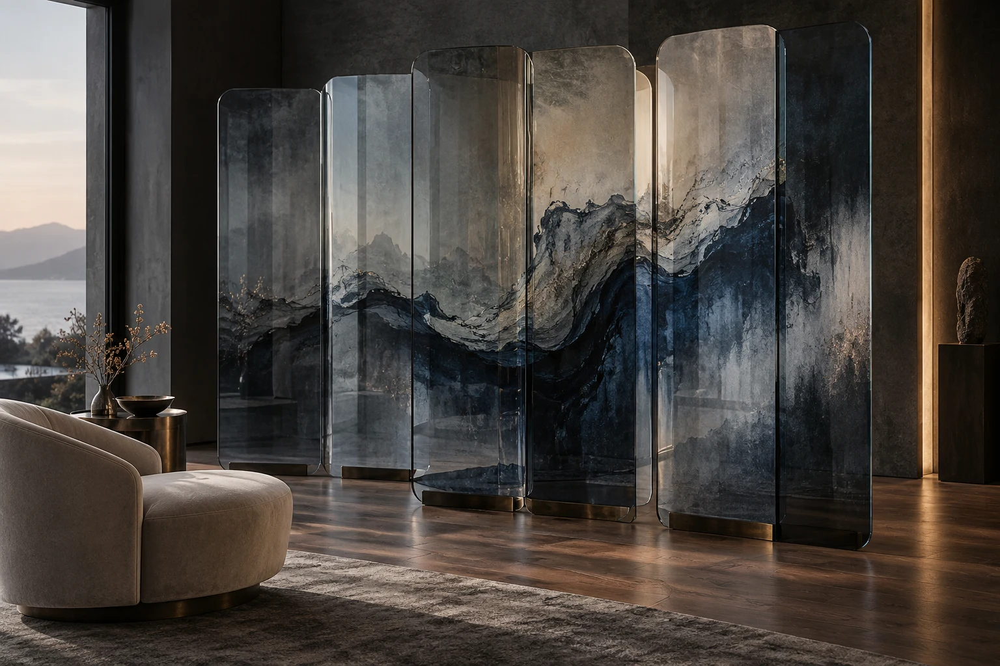

Знакомимся
Обсуждаем пространство, задачу и бюджет. Смотрим фотографии, план и то, что вас вдохновляет.
Я помогаю ему проявиться.
Создаю образы, которые становятся
частью вашего интерьера.
Всё начинается с вас: света в вашем доме, любимых оттенков, предметов, которые хочется сохранить. Из этих деталей рождается композиция — в точном масштабе и настроении вашего пространства.
Камень, стекло, керамика, дерево или смола придают ей новую глубину. Материал выбираем вместе, когда найдём саму идею.
Начните с того, что откликается.
Каждый образ — отправная точка
для вашей собственной истории.
Здесь появятся сохранённые образы. Нажмите на сердечко на понравившейся работе.
В коллекции — 94 интерьерных образа. Каждый образ можно развить и адаптировать под ваше пространство и выбранный материал.
Тем интереснее.
Разработаем его с нуля: от смелого эскиза и цифровых экспериментов до композиции, которая точно попадает в ваш интерьер.

Матовый, минеральный, прозрачный.
Выбираем поверхность под свет,
прикосновение и сценарий жизни.
Минеральная поверхность для акцентных стен, ниш и радиусных элементов. Мраморный рисунок, спокойная фактура бетона или выразительность сланца — разные образы на гибкой основе.
Композицию адаптируем к размерам поверхности, раскладке листов и условиям помещения. Цвет и фактуру согласуем на образце.
Авторская композиция для керамических панелей и плитки. Изображение адаптируем под модуль, швы и выбранную технологию нанесения. Цвет подтверждаем на пробном образце.
Прозрачность, отражения и свет становятся частью изображения. Рассматриваем панно, перегородки и декоративные вставки из стекла или оргстекла. Вид печати, крепление и возможность подсветки согласуем с производством.
Природный рисунок дерева становится частью авторской композиции. Разрабатываем изображения для деревянных панно, панелей и мебельных фасадов, учитывая оттенок, направление волокон и выбранную технологию нанесения.
Породу дерева, подготовку поверхности и финишное покрытие согласуем с производством по образцу.
Живопись, графика, ботаника и панорамные сюжеты в масштабе вашей стены. Учитываем проёмы, мебель и точки обзора. Фреску можно выполнить на гибком мраморе; для фотообоев подбираем отдельную печатную основу.
Изображение адаптируется к выбранной технологии. Фактическую фактуру, цвет, влагостойкость и условия эксплуатации подтверждаем образцом и документацией конкретного материала.
Понятный процесс,
в котором у каждой детали
есть своё место.
Обсуждаем пространство, задачу и бюджет. Смотрим фотографии, план и то, что вас вдохновляет.
Выбираем направление из коллекции или создаём новое. Уточняем палитру, ритм и композицию.
Адаптируем изображение к размерам и интерьеру. Подбираем основу, согласуем пробный образец.
Готовим файл для выбранного производства. Согласуем изготовление, доставку и монтаж по задаче.
Да. Можно начать с любого образа в галерее или создать новую композицию. Масштаб, цвет и расположение рисунка адаптируем под ваше помещение и выбранный материал.
Стоимость зависит от разработки изображения, количества адаптаций, площади и материала. После знакомства с задачей согласуем состав работы, цену и сроки. Дизайн, изготовление и монтаж рассчитываются отдельно.
Для таких задач материал подбирается с учётом влаги, температуры и условий эксплуатации. Проверяем основание, систему монтажа и защитное покрытие по документации конкретного производителя.
После согласования изображения и образца уточняем сроки и комплектацию. Подбираем производство под выбранный материал. Условия доставки и монтажа согласуем отдельно для вашего проекта.
Фото помещения, примерные размеры поверхности и пару изображений, которые вам нравятся. Если есть план или развёртка — отлично. Можно начать и с ощущения: «хочу камерно, смело, спокойно».
Расскажите о пространстве.
Я помогу найти его характер.